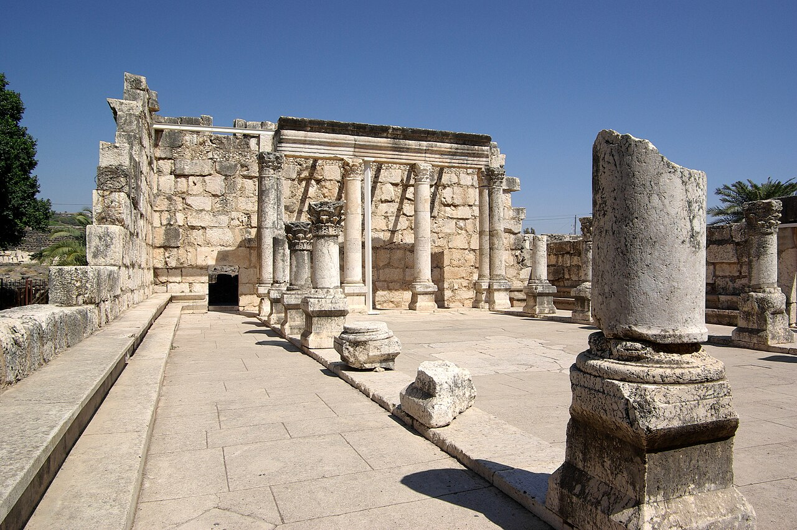

Capernaum - Peter's House and Synagogue

- Find Name
- Capernaum - Peter's House and Synagogue
- Historical Period
- Roman–Byzantine
- Artifact Date
- c. 1st century BC - AD 400
- Date Discovered
- 1905
- Discovery Location
- Capernaum (Tel Hum), Israel
- Current Location
- In situ, Capernaum, Israel
- Timeline Era
- Life of Christ
- Description
- The lakeside fishing village Jesus made His ministry home, with a first-century house venerated from early on as Peter's home (later enclosed in an octagonal church) and a white limestone synagogue standing over an earlier basalt synagogue foundation. Franciscan excavations from 1968 carefully exposed the house's rooms and inscriptions.
- Biblical Significance
- Capernaum is named over fifty times in the Gospels, and here its streets, synagogue, and a very ordinary fisherman's house can still be walked. That ordinariness is the wonder: the Son of God taught, healed, and called disciples in a real village whose stones still preach.
- Evidence Class
- Contextual
- Interpretations
- Scholars debate the identification: a first-century house beneath a fourth-century church, with graffiti naming Peter, is traditionally Peter’s house — but the link rests on later veneration, not proof. The later synagogue is securely dated to the fourth–fifth century, not Jesus’ day.
- Scripture Illuminated
- Related People
- Related Books
- Related Places
- Related Events
Awaiting Review Not yet checked against scholarly sources. Treat its claims as provisional until this entry is reviewed. About verification
Last reviewed: not yet reviewed